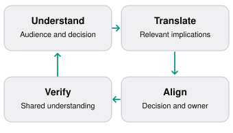
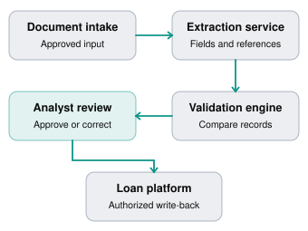
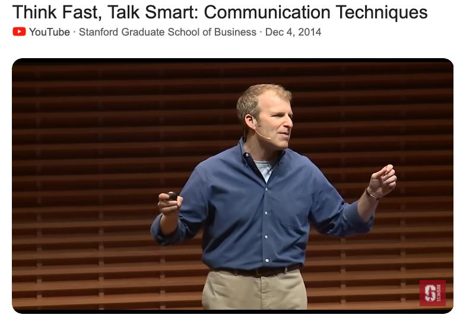
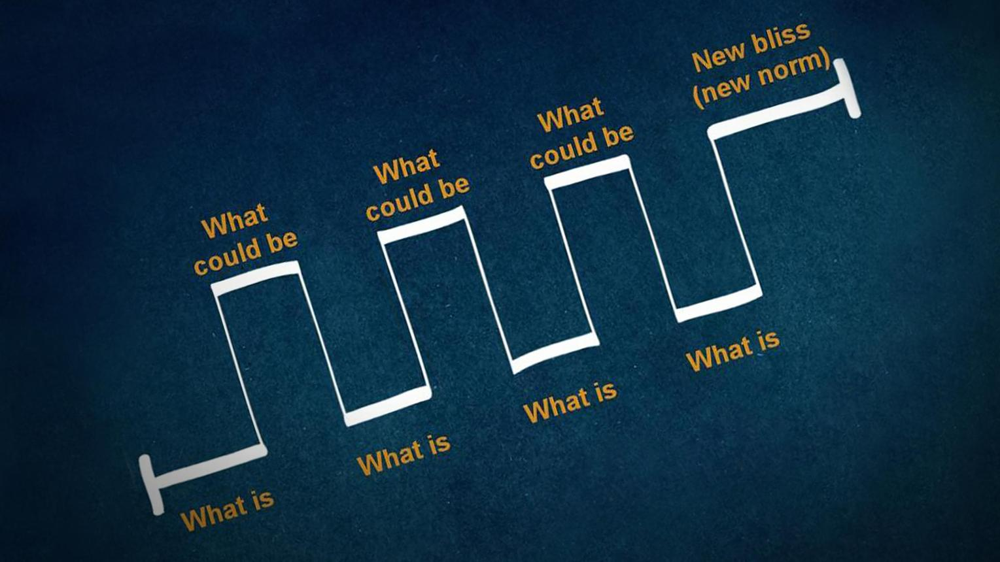

Intermediate
90–110 min
Stakeholder communication
Chapter overview
You're an FDE working with Meridian Bank on an AI-powered document review solution.
You've completed discovery, defined the requirements, and designed the initial architecture.
Now you have three meetings:
At 9:00 AM, the bank's engineering team wants to understand authentication, integration contracts, failure handling, and deployment.
At 11:00 AM, the operations director wants to know whether analysts will save time.
At 2:00 PM, the executive sponsor wants to know whether the project will deliver value within the agreed budget and timeline.
You're explaining the same solution, but each audience needs different information.
An effective FDE doesn't merely simplify technical language. They communicate the right information so each stakeholder can make the right decision.
This chapter teaches that skill through real-world scenarios, communication frameworks, and interactive practice.
Learning objectives
By the end of this chapter, learners should be able to:
Adapt technical explanations for engineers, executives, operations teams, and security stakeholders.
Translate architectural decisions into business impact without distorting the technical facts.
Structure status updates around progress, risks, decisions, and next steps.
Explain trade-offs, uncertainty, and delivery delays with credibility.
Manage stakeholder disagreements without overpromising.
Run productive technical and executive meetings.
Produce audience-specific communication artifacts.
9.1 Why communication is an engineering skill
Consider two FDEs who build equally reliable software.
The first communicates primarily through code, technical tickets, and architecture diagrams.
The second also explains why a decision matters, identifies its implications for users, and makes dependencies visible before they become blockers.
The second engineer may be better positioned to deliver a successful customer engagement—not because their code is superior, but because enterprise deployments require coordinated decisions.
A customer project can fail even when the software works.
Examples include a security team that was never informed about the data flow, operations staff who don't understand the new workflow, or executives who expected full automation when the pilot only promised assisted review.
Communication helps prevent these failures.
The FDE communication loop

Communication isn't complete when you've finished speaking. It's complete when the relevant people understand the situation and can act on it.
9.2 Understand your audience before presenting
A useful first question is:
What does this person need to understand or decide?
The answer varies by stakeholder.
Stakeholder | Primary concern | What to communicate |
|---|---|---|
Software engineer | Can we build and operate it? | APIs, architecture, failures, interfaces |
Security lead | Does it meet required controls? | Data flows, access, retention, audit |
Operations manager | Will the workflow improve? | User steps, exceptions, training, adoption |
Executive sponsor | Is the investment justified? | Outcomes, milestones, risks, decisions |
Product manager | Should this become reusable? | Patterns, customer demand, product gaps |
End user | How will my work change? | Practical tasks, controls, limitations |
These are starting points, not rigid stereotypes. A CTO may want detailed implementation information, and an operations director may have deep technical expertise.
The FDE should verify what each stakeholder actually needs.
The audience–decision–detail framework
Before a meeting, write down three things:
Audience: Who is present, and what is their context?
Decision: What do they need to understand, approve, or change?
Detail: What level of technical depth supports that decision?
For example, if a security reviewer must approve data processing, removing technical details would make the communication worse, not better.
The goal is relevance, not oversimplification.
9.3 Explaining the same architecture three different ways
Consider Meridian Bank's proposed solution.
Document review architecture — simplified

Illustrative architecture. Production controls and approval boundaries must be defined with the customer.Explanation for engineers
"The intake service accepts approved document packages and passes them to an extraction component. Extracted fields are compared against the loan platform's authoritative records. Discrepancies are persisted with source references. Authorized analysts review exceptions before write-back. We need to finalize service identity, retry semantics, idempotency, and audit logging."
Focus: interfaces, responsibilities, data integrity, failure handling.
Explanation for operations
"The system prepares a comparison of the financial information in each document package. Analysts can focus on mismatches and missing values instead of manually checking every field. They remain responsible for reviewing flagged items and approving corrections."
Focus: workflow, human responsibility, efficiency, exceptions.
Explanation for executives
"We're piloting a way to reduce manual review effort while retaining analyst oversight. The next milestone is to demonstrate the workflow and measure its impact on representative cases. We haven't yet validated the final time-savings target, so we will report the measured results before recommending a wider rollout."
Focus: business outcome, risk, milestone, evidence.
Notice that none of these explanations contradicts the others.
They present different levels of detail while preserving the same facts.
Audience adaptation must never become selective dishonesty. If the system has a critical limitation, the relevant decision-makers need to know it.
9.4 Translate technical trade-offs into business decisions
An FDE often needs to recommend one technical approach over another.
A weak explanation focuses only on implementation preference:
"We should use asynchronous processing because synchronous API calls will create latency problems."
A stronger explanation connects the implementation to the customer's workflow:
"If we process every document while the analyst waits, larger packages could delay the entire review. Background processing would let analysts continue other work while the system prepares results. The trade-off is that we'll need job tracking and failure notifications."
Both explanations may be technically correct. The second helps a stakeholder understand the consequences.
The four-part trade-off explanation
Use this structure:
Decision: What are we choosing?
Reason: Why does it matter?
Trade-off: What do we gain and give up?
Recommendation: What should happen next?
Example: Batch vs. real-time processing
Dimension | Batch | Real-time |
| Freshness | Scheduled updates | Lower potential delay |
| Complexity | Often simpler | Often more complex |
| Cost | Can be lower | Can require more infrastructure |
| Best fit | Periodic decisions | Time-sensitive workflows |
These are general tendencies, not universal rules. Workload, architecture, and service requirements determine actual performance and cost.
An executive-facing recommendation might be:
"Because analysts review completed packages rather than needing continuous updates, I'd start with a queued processing model. We can measure whether the turnaround time meets their needs before introducing a more complex streaming architecture."
This explains the technical choice without requiring the executive to know the implementation details.
9.5 Communicating progress, risks, and blockers
Status updates are not simply a list of completed tasks.
They should give stakeholders a reliable picture of the engagement.
A useful structure is Progress → Impact → Risk → Action.
ACTIVITY-FOCUSED UPDATE
"We finished three endpoints, fixed five bugs, and are working on deployment."
DECISION-READY UPDATE
"The pilot now completes the document extraction and comparison workflow in staging. That unblocks analyst testing. Production integration remains at risk because network approval is pending. The bank's infrastructure owner needs to confirm the approval date by Thursday so we can assess the rollout milestone."
The second message answers the questions that matter:
What has changed?
Why does it matter?
What remains uncertain?
Who needs to act?
Atlassian's stakeholder communication guidance recommends tailoring the level of detail, communication channels, and update cadence to the people involved.
Communicating uncertainty
Avoid treating estimates as guarantees.
Compare:
Overconfident: "The deployment will be finished Friday."
Vague: "We're still working on deployment."
Calibrated: "The application changes are ready. Friday's deployment depends on network approval and successful staging verification. We'll confirm the release decision after those checks."
Calibrated communication is not pessimism. It is a way of making commitments credible.
Escalation without blame
Suppose the customer's identity provider is rejecting the integration's service credentials.
Instead of saying:
"Your security team broke authentication."
Explain the observed problem, impact, and needed action:
"Authentication requests are being rejected after the latest configuration change. This currently blocks staging validation. We're reviewing the logs with the identity team and need confirmation of the intended service permissions."
You can be precise about the technical problem without speculating about responsibility.
9.6 Realistic scenario — The executive escalation meeting
It's Thursday, 3:00 PM.
Meridian Bank's executive sponsor has scheduled an urgent meeting. The pilot demonstration is next week, but the production network approval is delayed.
The FDE, Maya, joins with the operations director and engineering lead.
Executive meeting transcript
Fictional simulation · Condensed
Executive sponsor
We committed to showing this to leadership next week. Are we going to miss the deadline?
FDE · Maya
The core extraction and review workflow is working in staging. The remaining uncertainty is access to the production loan system. We can demonstrate the validated staging workflow next week, but I can't yet confirm production integration.
Executive sponsor
Why didn't we identify this earlier?
FDE · Maya
We identified network approval as a dependency during discovery. The approval has taken longer than the initial planning assumption. We should have escalated the milestone impact sooner, and I've updated the risk log and communication cadence.
Operations director
Can analysts still test the workflow?
FDE · Maya
Yes, using the approved staging data and integration. That will let us gather usability and timing evidence without representing the pilot as production-ready.
Executive sponsor
What are my options?
FDE · Maya
Option one is to proceed with the staging demonstration and keep production rollout conditional on approval. Option two is to postpone the demonstration until production integration is validated. I recommend option one, provided leadership understands the scope and security confirms the demo setup is approved.
Executive sponsor
What do you need from me?
FDE · Maya
Agreement on the demonstration scope and an owner to resolve the production approval dependency. We'll circulate the revised milestone plan and the next decision date today.
What Maya handled well
She distinguished the completed technical work from the unresolved dependency. She did not promise a production release without evidence. She acknowledged that escalation should have happened earlier, and she gave the sponsor a concrete decision.
What would make the meeting even stronger?
Maya should also provide a concise written follow-up with the exact milestone changes, dependency owner, next update date, and approved demonstration boundaries.
The meeting should end with a decision, not merely a shared feeling of urgency.
9.7 Handling disagreements between stakeholders
Stakeholder disagreements are normal in enterprise deployments.
For example:
Operations wants maximum automation.
Security wants strict controls.
Engineering wants a maintainable architecture.
Leadership wants rapid delivery.
These positions may all reflect legitimate concerns.
An FDE should not simply side with the person who has the highest title.
A five-step approach to disagreement
01
Identify the underlying interests
Ask what each stakeholder is trying to protect or achieve.
02
Separate facts from preferences
Determine which concerns are mandatory constraints and which are negotiable choices.
03
Make options explicit
Describe feasible approaches, costs, risks, and operational implications.
04
Find the authorized decision-maker
Confirm who can approve the trade-off, particularly for security or compliance controls.
05
Record the decision
Document the agreed path, rationale, owner, and remaining risks.
Example: Full automation vs. human approval
The operations director wants the system to approve document packages automatically.
The risk team requires a human reviewer for certain decisions.
A useful FDE response is:
"We have two different requirements: reducing manual effort and preserving required oversight. We can explore automating extraction and reconciliation while keeping human approval for controlled decisions. Let's validate the workflow with both teams and confirm which approval steps are mandatory."
This reframes the disagreement as a design problem with explicit constraints.
9.8 Choosing the right communication channel
Not every issue requires a meeting, and not every decision belongs in chat.
Situation | Useful channel | Why |
|---|---|---|
Routine engineering blocker | Shared team channel or ticket | Quick visibility and ownership |
Architecture trade-off | Technical design review + decision record | Detailed evaluation and durable rationale |
Executive milestone risk | Direct discussion + written summary | Timely decision and accountability |
Security approval | Approved governance workflow | Formal evidence and authorization |
User workflow feedback | Interview or observed session | Rich context and examples |
Weekly project progress | Concise written status update | Consistent shared record |
For urgent incidents, use the agreed incident-response channels and escalation process rather than relying on an ordinary weekly update.
Meeting discipline
A productive FDE meeting should have a purpose, relevant participants, and a clear outcome.
Before the meeting, identify the decisions needed. During the meeting, distinguish discussion from agreement. Afterward, record actions, owners, and deadlines.
If a 30-minute meeting ends without a decision because important information is missing, document exactly what must be collected and who will collect it.
9.9 Recommended learning resources
These resources are verified against Stanford, Google, Atlassian, TEDx, or the original publisher pages.

WATCH · REQUIRED · VIDEO
Think Fast, Talk Smart: Communication Techniques
Stanford Graduate School of Business · Matt Abrahams
A lecture on communicating clearly, handling spontaneous speaking, and improving confidence in professional conversations. Pay attention to how structured thinking helps when questions arise unexpectedly.

WATCH · OPTIONAL · VIDEO
Nancy Duarte — The Secret Structure of Great Talks
TEDxEast · Nancy Duarte
Explores how effective presentations connect a current problem with a compelling future state. Useful for executive demos and customer presentations.
READ · REQUIRED · GUIDE
Stakeholder Project Communication Plan
Atlassian Team Playbook
Learn to map stakeholder needs, choose communication channels, and establish a useful update cadence.
READ · REQUIRED · TECHNICAL COMMUNICATION
Google Technical Writing — Audience
Google for Developers
Covers tailoring terminology, assumptions, and technical detail to the reader's existing knowledge and responsibilities.
READ / LISTEN · OPTIONAL · STANFORD
How to Think Faster and Talk SmarterSource link needs rechecking. See the resource directory for details.
Stanford Graduate School of Business
Emphasizes audience relevance, communication structure, and making information actionable rather than overwhelming listeners with details.
Resource assignment
After watching the Stanford lecture, prepare a 60-second explanation of a technical project you've worked on.
Deliver it twice: once as if speaking to a senior engineer, and once as if speaking to a business sponsor.
Compare the two versions. What information changed? What facts remained consistent?
9.10 Interactive practice — Adapt your message
You need to explain the same technical issue to different stakeholders.
Scenario: The customer API allows only 100 requests per minute. Your current integration can exceed that limit during peak processing, so you are proposing a queue and controlled retry mechanism.
Stakeholder messaging lab
10–15 min
Select your audience
Write a 60-second explanation
Auto-saved on this device. Review your answer for customer impact, evidence, assumptions, ownership, and a clear next step.
Example response
We've identified an API capacity limit that could delay processing at peak volume. There's a feasible design change, but it adds implementation and testing work. We recommend validating it now rather than risking failures during the pilot. We'll confirm the schedule impact after the capacity test.
9.11 Practical exercise — The executive status update
Exercise 9.1: Communicate a project risk
20–25 min
Scenario: Northstar Logistics
Your team is building a shipment exception processing system.
Current status:
Exception classification works on the approved test dataset.
The customer-facing dashboard is ready for user testing.
The transportation management system API intermittently returns errors.
The customer's integration team has not confirmed the production rate limits.
The pilot demonstration is scheduled for next Friday.
You have not validated whether the integration will support peak shipment volume.
Write an executive status update of approximately 120–180 words. It should communicate confirmed progress, unresolved risks, business implications, the recommended next step, and any decision or support needed.
Auto-saved on this device. Review your answer for customer impact, evidence, assumptions, ownership, and a clear next step.
Suggested structure
Lead with the current pilot status and whether the demonstration remains feasible.
Explain that classification and dashboard development have progressed, but integration reliability and capacity are not yet validated.
Distinguish a controlled demonstration using approved test data from a production-ready deployment.
Recommend a joint API investigation and peak-volume test. Name the required customer decision or owner, and commit to a specific next update after the necessary checks.
9.12 Practical exercise — The stakeholder disagreement
Exercise 9.2: Facilitate a difficult meeting
15–20 min
Meridian Bank's operations director wants all document packages automatically approved when the AI system reports high confidence.
The security and risk teams say certain decisions require explicit human approval.
The executive sponsor wants a decision before the next milestone.
How would you facilitate the discussion without taking sides prematurely?
Auto-saved on this device. Review your answer for customer impact, evidence, assumptions, ownership, and a clear next step.
9.13 Interactive knowledge quiz
9.14 Chapter summary
Effective stakeholder communication is a core part of forward-deployed engineering.
The key lessons are:
Understand the audience. Different stakeholders need different levels of detail and different decisions.
Translate, don't distort. Explain technical realities in terms of relevant consequences without concealing important limitations.
Lead with outcomes. Business impact is usually more useful than a list of engineering activities.
Communicate uncertainty accurately. Distinguish confirmed facts, assumptions, risks, and conditional commitments.
Make trade-offs explicit. Good explanations help stakeholders understand what they gain and what they give up.
Handle disagreement constructively. Clarify interests, constraints, options, and decision authority.
Close the loop. Important conversations should produce decisions, owners, and next steps.
The central principle:
A great FDE doesn't just make complex systems understandable. They make complex decisions easier for customers to make.
UP NEXT · MODULE 02 / CHAPTER 10
Managing Expectations, Scope, and Difficult Conversations
We'll cover negotiating delivery commitments, responding to unreasonable deadlines, handling scope creep, navigating customer frustration, and communicating bad news without damaging trust.
The chapter will include a difficult customer escalation transcript, practical negotiation exercises, verified videos and articles, and an interactive knowledge quiz.
Field notes
Capture the idea you will use in your next customer conversation.